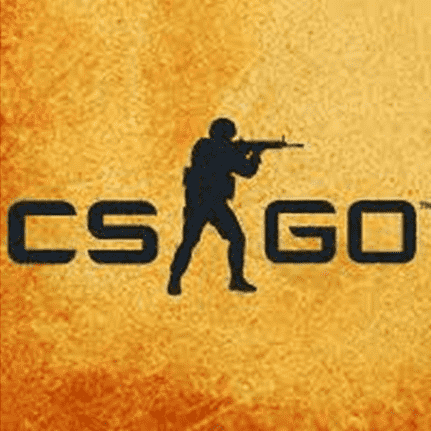
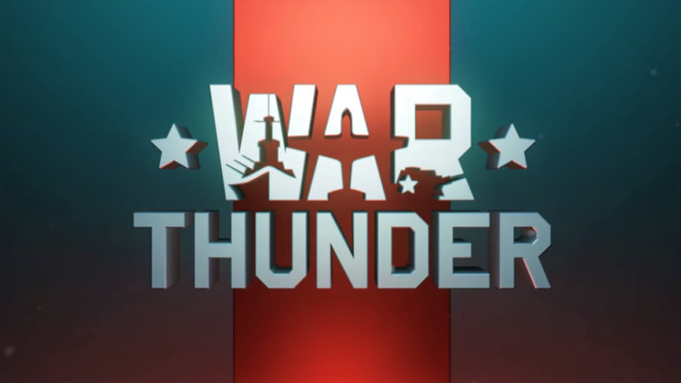

-

Counter-Strike: Global Offensive
Hours Played: 4700+
(Okay I can't figure out how to style this the way I want so im just letting it look like this for now)
Csgo is probably not my most played game of all that, im guessing that would be minecraft. But CSGO is a very close runner up, I have spent a significant portion of my life playing and watching this game. Multiple of my friends I've met through this game. -

War Thunder
Hours Played: 568
(Okay I can't figure out how to style this the way I want so im just letting it look like this for now)
War thunder is #2 on my steam list, with a freaking 568 hours. It's a pretty good game that's free to play ! It gets very grindy though you have to put a lot of hours into it to get modern vehicles. That's not really a big issue for me as I just really play it mainly for the ww2 era vehicles. it's pretty fun -

Player Unkown's Battle Grounds
Hours Played: 386
(Okay I can't figure out how to style this the way I want so im just letting it look like this for now)
Pubg is appearantly my #3 played game on steam. Haven't played it in ages though. It was fun when it first came out but now it's just collecting dust in my virtual library. This game was quite fun back when I wasn't sick of Br's -

Rocket League
Hours Played: 301
(Okay I can't figure out how to style this the way I want so im just letting it look like this for now)
Ah good old Rocket league, this list wouldn't be complete without it. Well this list will never be complete as this is just me trying out shit, but that's beside the point. Great game to make friends with, really easy game to get into but extremely hard to master. I can honestly say it's one of the only esport games that I like to watch other than CSGO. Big fan. not a big fan of them going to epic though.